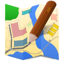
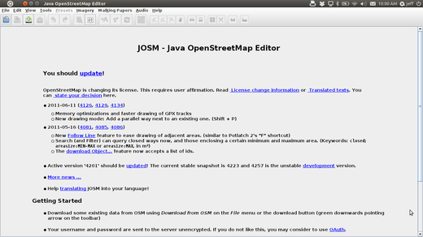
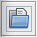
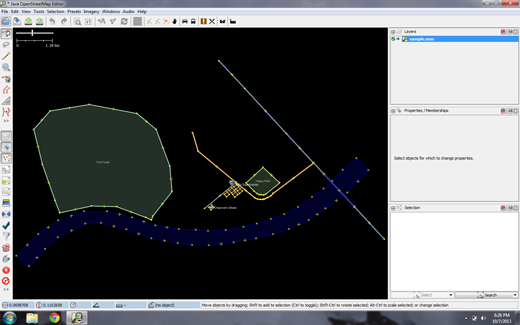
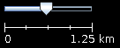
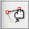
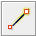

JOSM クイック スタート
JOSM は、 Java で記述された OpenStreetMap (OSM) データ用の、機能豊富で、拡張可能な、オフラインのデスクトップエディタです。
スタンドアロン GPX トラックや GPX トラックデータの読み込みと共に、OSM データベースから既存のノード (点) 、ウェイ (ライン) 、メタデータタグ (名前/値の情報) 、リレーション (点と線の順序付けられたシーケンス) の編集をサポートしています。GPX トラックは、通常、GPS 受信機または他のソースから事前にダウンロードされます。
このクイックスタートでは、Java OpenStreetMapエディターの基本的な使い方について説明します。
デスクトップから を選択します。JOSMが始まると、次のようになります。

次に、サンプルのOSMファイルを開きます。このファイルを使用して、JOSMを使用してマップを描画する基本的な方法を学習します。このマップは実際の場所の実際のマップではないため、OpenStreetMapには保存しません。
ここでファイルをダウンロードしてください: sample.osm
次に、JOSMでサンプルの地図を開きます。JOSMの左上に表示されている」ファイルを開く」ボタンを押してください。

sample.osm ファイルを探します。別の場所に保存していない限り、通常はDownloadsフォルダにあります。
ファイルをクリックして、もう一度」Open」をクリックしてください。サンプルの地図が開き、次のように表示されます。

注釈
これらのデータを使用して、さまざまな編集方法を試します。ただし、これらの架空のデータをデータベースにアップロードしないでください。
画面上で右クリックをしたままマウスを動かすと、表示領域を上下左右に移動させることができます。
表示領域の拡大/縮小を行うにはいくつかの方法があります。マウスが使える場合は、マウスのスクロールホイールを回転させることで、拡大と縮小が可能です。ラップトップを使用していて、トラックパッドやタッチパッドを使っていてマウスがない場合は、地図の左上に表示されている+と-のボタンをクリックしてください。マウスを左クリックしたままバーを左右に動かすことで、地図の拡大と縮小ができます。

サンプルの地図を見てみましょう。種類の違うオブジェクトがいくつか表示されています。表示されているのは、河川が1つ、森林が1つ、そして建物と道路がいくつか、複数の店舗です。オブジェクトを選択するには、対象を左クリックしてください。
地図の上のオブジェクトをいくつかクリックしているうちに、オブジェクトにはポイント、ライン、シェイプの3つの種類があることに気がつくかもしれません。ポイント、ライン、シェイプがあります。
ポイントとは単一の地点で、シンボルによって表現されます。このサンプルマップには、靴屋とスーパーマーケットの2つのポイントがあります。靴屋は靴のシンボルで表され、市場はショッピングカートで表されます。
その他、地図に描かれているいくつかのラインは道路を表現しています。ラインの細部を表示させると、ラインの中にいくつかのポイントが存在していることがわかります。これらのポイントは特定のシンボルや情報を持っておらず、ラインがどの地点を通過しているのかを指し示しています。
最後に、地図の上には多くのシェイプが存在し、森や河川、公園、建物など、それぞれ異なる地点を表現しています。シェイプは基本的に、区域や建物など、なんらかのエリアを表しています。シェイプはラインに非常によく似ていますが、唯一、ラインの始点と終点が1つのポイントになっていることが異なっています。
地図には基本的に、ポイント・ライン・シェイプという3つのタイプのオブジェクトしかない、とかんがえるととてもシンプルです。これから先、OpenStreetMapについて調べてゆくと、これらを別の単語で表現していることがあります。 ポイントは実際には ノード(node) と呼ばれ、ラインは ウェイ(way) と呼ばれます。シェイプは、データ上では始点と終点が同一の地点にあるだけのウェイなので 閉じたウェイ(closed way) と呼ばれます。
オブジェクトを選択すると、JOSMの画面右側に ”プロパティ” と呼ばれるリストが表示されることに気がつくかもしれません。ここに表示される値はタグと呼ばれます。タグとは、ポイントやライン、シェイプに関連付けられた情報で、その地点が何を表しているかを示しています。タグについては、後の章で詳しく説明します。いまのところ、森林や河川、建物などの内容はタグに書かれた情報によって表されている、ということを知っているだけでかまいません。
地図を手書きで書くときを思い出してください。ポイントやライン、シェイプをどのように使って描くと、地図がよりわかりやすくなるでしょうか。他にはどんな場所をポイントで表すのが一番いいですか?ライン?シェイプ?
- 地図の左側にある森林を選択してみましょう。森林をあらわしているラインを選択します。ラインの上にあるポイントではないので注意してください。
- 選択ができたら、森林を選択した状態でマウスを左クリックし、クリックしたままマウスをドラッグさせてみましょう。地図の中の別の場所へ森林を移動させることができます。
- 森林をあらわすラインの中にあるポイントを、どこか1つクリックして選択して下さい。マウスを左クリックした状態で、クリックしたままマウスをドラッグさせてみましょう。ポイントを移動させることができます。オブジェクトの位置を変更したい場合や、オブジェクトの形を変更したい場合はこのようにして行います。
- JOSM画面の左側には、多くのボタンが配置されています。それらのボタンを押すと右側に新しいボックスが表示され、地図に対する情報がより多く表示されます。しかし、それらのボタンのなかで最も重要なのは、列の一番上に表示されているボタンです。これらのボタンは、マウスで実施できる挙動を変更します。
- 最も重要なボタンは、このカラムの一番上のほうに配置されています。これらのボタンをクリックすると、オブジェクトの選択や描画を行うことができます。
- ここまでの操作では、”選択”ツールを使用してきています。以下のアイコンです。:

描画を行う際には、地図のどのオブジェクトも選択していないことを確認してください。
なにもオブジェクトが描かれていない、地図の黒い地点をクリックすることで、なにも選択していない状態にすることができます。
2番目のボタン”描画”をクリックしてみましょう。

地図の何も書かれていない地点でダブルクリックしてみてください。単一の地点が1つ描画されます。
- ラインを描画するには、まずどこかでクリックを1回行います。そのままマウスを移動させ、別の場所でもう一度クリックします。ラインの形ができるまで、移動させてクリックを繰り返します。ダブルクリックを行うと、そこでラインの描画は終了となります。
- シェイプを描くには、ラインと同じような操作をした後、ラインを描き始めたポイントでダブルクリックします。
ポイント、ライン、シェイプを描画する方法はわかりました。単にポイントを描いただけでは、そのポイントが何を表しているのか不明瞭なままです。ポイントを追加するときには、それが店舗なのか、学校なのか、それとも他の施設なのかを示しましょう。シェイプについても同様で、そこがなにに使われている土地なのか、それとも建物なのか、などを示します。
画面左側にあるカラムから、”選択”ツールをクリックしてください。
描画ツールを選択した状態で、編集したいオブジェクトの一部をクリックしてください。
トップメニューに表示されている”プリセット”をクリックしてください。より詳細なメニューが表示されますので、地点に対して定義したい種別が表示されるまでマウスを移動させてください。
プリセットをクリックすると、詳細な情報入力を促すポップアップが表示されます。すべての項目を入力する必要はありませんが、地点の名称など、いくつかの重要な項目については入力ができるとよいでしょう。
情報の入力が終わったら、”プリセットの適用”をクリックしてください。以上の操作でオブジェクトに対して情報が追加され、ポイントやライン、シェイプの表示色変更、あるいはシンボル表示の変更などが行われます。これで、何であるかの定義をおこなうことができました。
それでは、ここまでで紹介したテクニックを実践するため、実際に自分自身の地図を描いてみましょう。題材として、あなたが紙の上に描いた地図を取り上げます。
- サンプルの地図表示が画面外になるよう、表示位置を変更します。マウスを右クリックし、何も書かれていない場所までドラッグして移動します。
- 描画ツールを使って、ポイント、ライン、シェイプを描いてみてください。描かれたオブジェクトの内容を示すには、プリセットメニューから適切な内容を選択します。
- 自分自身の地図を書き終えたら作業完了です。”sample.osm”で表示されていた地図のように描けたでしょうか？
これらの基本的な編集テクニックに慣れてきたら、実際のフィーチャのマッピングにうつるとよいでしょう。
注釈
最初にサンプルデータを含むレイヤを削除することが非常に重要です。これらのデータは架空のものであり、OpenStreetMapデータベースにアップロードしないでください(新しいJOSMリリースでは自動的にこの問題が回避されます)。
画面の右上にあるLayersウィンドウで、sample.osmレイヤを選択します。次に、そのウィンドウの右下隅にあるごみ箱アイコンをクリックします。または、レイヤのコンテキストメニューから[削除]を選択することもできます。